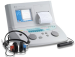

2023年
問題33 音に関する次の記述のうち，最も不適当なものはどれか．
（1）音は最終的に神経を経て大脳に伝わり音として認識される．
（2）同じ音でも，聞く人によって，快適な音になったり，騒音になったりする．
（3）ヒトが聞き取ることができる音の周波数帯は， およそ20Hz〜20kHz 程度と言われている．
（4）音の伝達において気導とは空気の振動による音が鼓膜を通じて伝達されることである．
（5）音などの定期健康診断における聴力検査では，スクリーニングとして500Hzと2,000 Hzのレベルが測定される．
2023年
問題33 正解（5） 頻出度AAA
スクリーニングは1,000Hzと4,000Hzのレベルが測定される．
騒音作業に常時従事する労働者の健康診断では，オージオメータ（2023-33-1図参照）による1,000Hz及び4,000Hzにおける選別聴力検査（1,000Hzについては30dB，4,000Hz については25dB，30dBの音圧の純音が聞こえるかどうかの検査）を実施し30dBの音圧での検査で異常がみられた者その他医師が必要と認める者について，追加の検査を実施する．

出典 リオン株式会社
https://www.rion.co.jp/news/html/news_070901_1.html
-(1)「音」とは，弾性体としての媒質の圧力や粒子変位が連続的，周期的に伝わってゆく現象をいう．音波ともいう．空気中の場合，圧力変化は媒質である空気の密度の疎密変化として発生することから疎密波と呼ばれ，伝播して人間の鼓膜を励振させ，その振動は内耳の蝸牛により電気信号に変換され神経細胞を経由して大脳の聴覚野に至って音という感覚を生じさせる．
媒質（＝空気粒子）の振動方向と音の進行方向が平行なので音は縦波である(ちなみに光は横波である)．
-(2) ヒトの可聴範囲は，2023-33-1表参照．周波数の方が頻出．
2023-33-1表 ヒトの可聴範囲
| 周波数では | 20Hz～20,000Hz（20kHz）の約10オクターブ |
| 音圧レベルでは | 0～130dB |
-(4) 気導が，音が外耳と中耳を通して内耳へ伝えられることを言うのに対して，骨導は，音が頭蓋骨と軟部組織の機械振動を通して内耳へ伝えられることをいう（録音された自分の声を聴くと違和感を感じるのは，録音されているのは気導だけによる音声なのに対し，普段我々は自分の声を，気導と骨導のミックスで聞いているからである）．